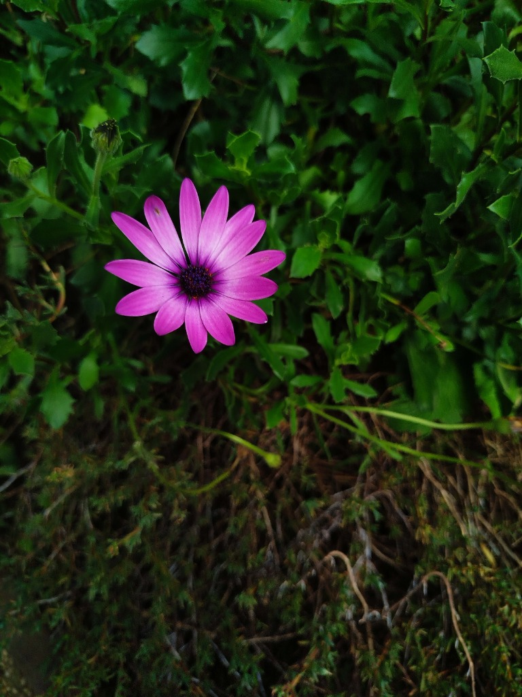

Objetivo
Experimentar con los recursos del lenguaje fotográfico para desarrollar una mirada visual propia, explorar diferentes formas de representar el entorno y comunicar ideas, emociones y conceptos mediante la imagen.

Selección de proyectos y ejercicios fotográficos que exploran la imagen como medio de expresión y comunicación visual. A través del encuadre, la luz, el color, la composición y la perspectiva, cada fotografía busca construir una narrativa visual y transmitir una intención estética.
Experimentar con los recursos del lenguaje fotográfico para desarrollar una mirada visual propia, explorar diferentes formas de representar el entorno y comunicar ideas, emociones y conceptos mediante la imagen.
Construcción de una colección de fotografías con diferentes enfoques visuales y narrativos, fortaleciendo habilidades de observación, composición, manejo de luz, color y edición fotográfica.
Explora el libro fotográfico completo directamente aquí o ábrelo en pantalla completa.